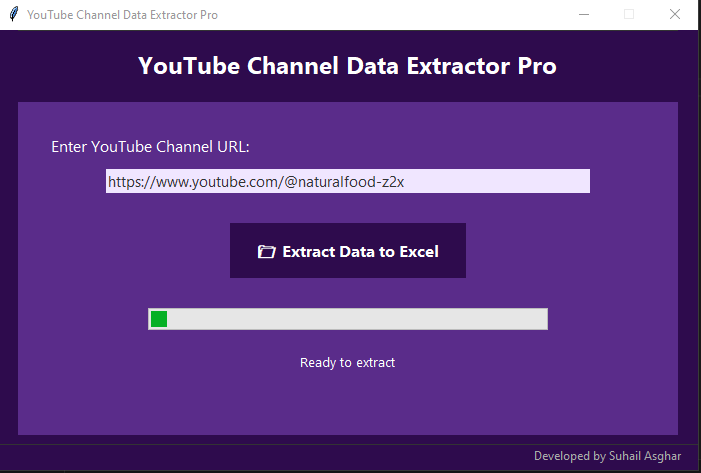

YouTube Single Channel Data Extractor Pro
Extract every single video from one channel into Excel — fast, accurate, and without coding.
Buy Now — $69 One-TimeKey Features
One-Channel Focused
Perfect for influencers, researchers, or small businesses managing one channel.
Full Metadata Export
Exports title, description, upload date, views, duration, thumbnails into Excel (.xlsx).
No Login Required
No API keys. No cookies. Just paste the channel URL and run.
Offline Operation
Runs on Windows, Mac, Linux — no internet needed after setup.
Lifetime Updates
One-time payment. Get free upgrades forever.
Step-by-Step Guide
Includes detailed instructions — even beginners can use it.
Tool Interface
*Exports full metadata — title, description, upload date, duration — into Excel
Rady to extract every single video from one channel into Excel--Fast?
One-time payment. Lifetime updates. No subscriptions. Zero cloud dependency.
Buy Now — $69 One-Time